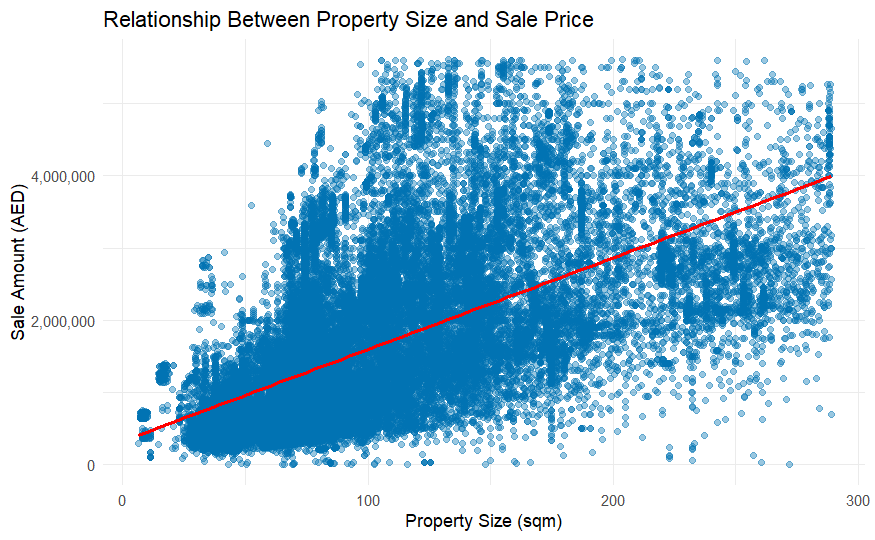

Dubai real estate.
Beyond the average price.
I analysed Dubai property transactions in R to understand how sale prices differ by property type, size and location—and turn a large dataset into clear comparisons.
Sales, mortgages and gifts
From 61,046 original sales
Median: AED 1,316,143
One average cannot describe a whole market.
Property transactions mix very different assets and locations. A single headline price can hide which segments are most active, what a typical sale looks like and how much prices vary.
The question: how do sale prices differ across property types, areas and nearby amenities?
My approach: prepare a consistent sales dataset, compare prices alongside transaction counts, and use visual analysis to identify patterns worth investigating.
The analysis gives readers a clearer starting point for comparing market segments. It describes the transactions in this dataset; it is not a property valuation or investment forecast.
From 22 fields to meaningful comparisons.
- Inspect: profile 81,601 records, review field types and missing values, and examine price and size distributions.
- Prepare: parse dates, convert size fields to numbers and standardise area names.
- Filter: apply boxplot-based outlier rules to price and property size within each transaction type, then focus on sales.
- Compare: calculate counts, medians and means by property subtype and location. Use box plots and a scatter plot with a fitted trend to explore variation.
- Communicate: turn the findings into labelled R visualisations and clear numerical comparisons.
7,750 sales (12.7%) fall outside the filtering rules, leaving 53,296 for the comparisons below. Their average price is AED 1,585,593, above the AED 1,316,143 median—a reason to show both measures.
Understand the analysis scope
- The final cleaning step uses R’s boxplot rule: values beyond 1.5 times the interquartile range from the lower or upper hinge are excluded. For sales, the upper limits are AED 5,610,826.03 and 288.865 m². This focuses the analysis away from the most expensive and largest properties.
- The source has 483 missing transaction-size values and 408 missing property-size values. The final filter retains 272 sales with missing property size; they contribute to price summaries but not the size scatter plot.
- Records are counted as transactions, not unique properties or buyers. The final analysis does not apply the separately created unique-record table.
- All interactive values are recalculated from the supplied CSV using the final notebook filtering logic. Counts and sample-size controls are displayed to support fair interpretation.
Flats make up 77.7% of filtered sales.
41,388 flats were recorded, compared with 4,606 villas. The typical flat sold for AED 1,139,875; the typical villa sold for AED 2,154,409. Switch between price and volume to see two different sides of the market.
The eight most frequently sold property subtypes, ordered by the selected measure. Prices in AED, rounded to the nearest dirham. Median means the middle sale price; mean is the total value divided by the number of sales.
Show the numbers
What this means: the most common property type is not necessarily the most expensive. Compare like-for-like segments before using an overall market figure.
Activity and price tell different stories.
Jumeirah Village Circle recorded 6,478 sales, the largest count among areas in the filtered data. Its median was AED 702,874, compared with AED 1,350,000 in Business Bay, where there were 4,447 sales.
Top ten eligible areas for the selected measure. The minimum-count control is added here to make sample sizes easier to compare. Prices in AED, rounded to the nearest dirham. Median means the middle sale price; mean is the total value divided by the number of sales.
Show the numbers
What this means: a busy area and a high-price area are different findings. The number of observations helps put each price comparison in context.
Prices dipped to April, then recovered.
The average sale price fell from AED 1,625,218 in January to AED 1,516,614 in April, a 6.7% decline. It then rose 8.2% to AED 1,640,538 in June, the highest monthly average in this period.
Average property sale price · January–June 2023
Average sale price in AED, using the same 53,296 filtered sales. The vertical axis starts at AED 1.50 million to make monthly changes visible. Select a month to see its average price and sale count.
Show the monthly numbers
What this means: monthly averages reveal fluctuations that an overall average hides. They also reflect the mix of properties sold each month, rather than the change in value of the same properties. June’s observations end on 26 June 2023; this six-month view does not establish a seasonal pattern.
Size matters. It does not explain everything.
The fitted trend rises with property size, while the spread of points shows that similarly sized properties can sell for different amounts. This comparison includes 53,024 sales with a recorded property size.

This is an observed relationship, not a prediction of an individual property’s value.
Explore the places around the property.
The 2,295 sales labelled nearest to Burj Khalifa had an average price of AED 2,625,199 and a median of AED 2,409,000. Compare landmark, mall and metro groups below.
Blank labels excluded. Landmark and mall groups require at least ten sales. Metro comparisons use the twenty most frequently recorded stations. Names retain the dataset’s labels. Prices in AED, rounded to the nearest dirham. Median means the middle sale price; mean is the total value divided by the number of sales.
Show the numbers
What this means: these are prices grouped by the nearest amenity label. They do not measure a distance-based premium or isolate the effect of an amenity from property type, size or area.
Three ways the analysis supports better questions.
Clearer comparisons
Separate sales from mortgages and gifts, then compare property types using a consistent filtering approach.
More useful price context
Show typical price, average price and sale counts together, so readers can distinguish price levels from market activity.
Focused follow-up
Highlight differences by size and location to guide deeper investigation. These are analytical benefits, not measured financial outcomes.
What I learned.
- Cleaning changes the story. Outlier rules define the part of the market being described, so they need to be explicit.
- A typical price needs context. The median and mean answer different questions; both become more useful when shown alongside counts.
- Association is a starting point. Size and location patterns help frame further questions, but do not establish causes or predict returns.